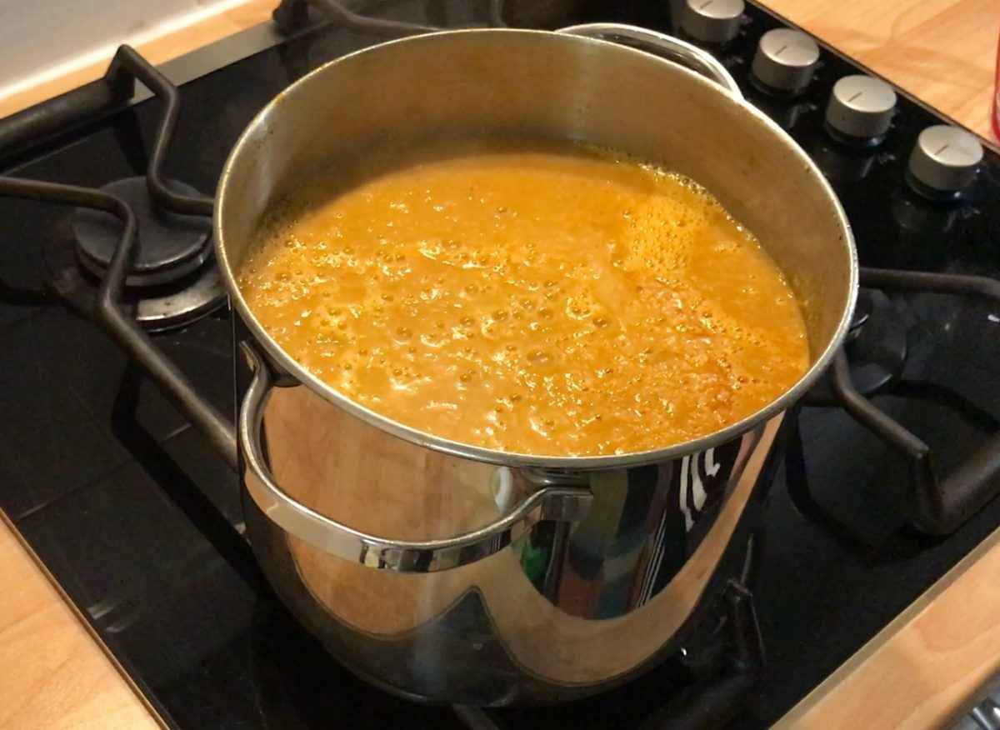

Go-to Curry Base

Description
Last week I batch made a curry base and now just take what I need out of the freezer and it's great for an easy meal.
Ingredients
- 2 tbsp oil
- 1 onion (finely chopped)
- 2 garlic cloves (minced)
- 1 tsp ginger (grated)
- 1 tsp curry powder
- 200ml water or chopped tomatoes
Steps
- Heat oil, fry onion until soft (5-7 mins).
- Add garlic, ginger, and curry powder — cook 1 minute.
- Add water or tomatoes, simmer 10 minutes, then blend (optional).
And it's as simple as that! Freeze up to 6 months
Return Home